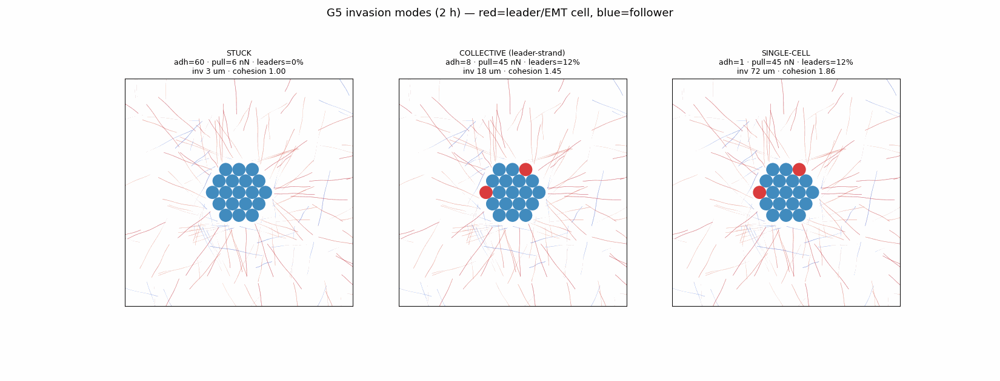

Adhesion 60, pull 6 nN: about 3 µm invasion; the organoid remains cohesive.
Lazy-loaded Python result · rendered on canvas
Watch the organoid remodel and invade the collagen
Every frame is exact Python output replayed on the canvas; the browser runs no second solver. Fibres are coloured by their radial order (blue = tangential, red = radial). True geometry is 1×.
loading…
t = 0
tangential fibre
radial fibre
fixed cell (B)
moving cell (D)
Leader-cell heterogeneity separates three invasion regimes
The original released-cell model used homogeneous cells and mainly produced collective radial expansion. The new refinement marks a small outer fraction as EMT-like leaders whose cell–cell adhesion is reduced to 15%. Sweeping adhesion against pull now produces stuck, collective strand and single-cell escape regimes.



Adhesion 8, pull 45 nN, 12% leaders: about 18 µm invasion while cells remain connected.
Adhesion 1, pull 45 nN, 12% leaders: about 72 µm invasion with strong dispersal.
Evidence boundary. These numbers are seed-23, two-hour personal simulation tests, not experimentally validated findings. The current “leader” differs only by reduced adhesion—not higher traction or MMP secretion. The next clean test is to add higher leader traction as a separate ablation and compare against quantified Kolade-lab movies.
What each stage adds
Staged build A → E
N motor–clutch disks + a soft cell–cell adhesion potential pack into a cohesive, force-balanced organoid.
Fixed organoid; each surface cell reels nearby collagen inward. Near-field radial order rises.
Nonlinear fibre tension (ablation flag). Honest result: negligible in this gentle-strain regime.
Homogeneous cells translate under the reaction of their grip-reel traction; the first version mainly expands collectively.
A small outer fraction receives 15% adhesion, exposing stuck, connected-strand and single-cell regimes across adhesion × pull.
Bell crosslink rupture + re-weld (stress-selective). Rewiring is real; a clean κ is still confounded by slow relaxation.
Grippable fibres are gated to be boundary-connected and seeded as long radial tracts, so the pull reaches the mid-field.
Implemented equations
What the model solves
ζ ṙi = Fstretch + Fbend + Fcrosslink + Frepulsion + Factive
Same bead–spring engine as G2; repulsion now sums over every cell disk.
Fcc(d): repel d<d₀, adhere d₀≤d<d₀+r
Soft adhesive disks (tissue surface tension); adhesion strength sets the invasion mode.
kadhij = kadh min(si,sj), sleader = 0.15
The weakest cell sets each pair bond; only a selected outer fraction receives the reduced multiplier.
γc ṙc = −Σ Fcell→ECM + Fcc
Reeling collagen inward pulls the cell toward the matrix = outward invasion.
Sr = ⟨2(t̂·r̂)² − 1⟩
+1 radial (TACS-3-like aster), −1 tangential, 0 isotropic.
koff = koff0 exp(F/Fb)
Loaded welds rupture; fibres re-weld at their current crossings (topological remodelling).
Numba step · O(E) grid links · cached contacts
Full-scale organoid (43 cells, ~24k beads, 2400 steps) runs in ~8 s.
Evidence boundary. Own-simulation output is personal testing, not a confirmed finding.
Stage-B alignment is real but modest; Stage-C strain-stiffening is negligible here; Stage-D v2 mode boundaries
are exploratory personal tests; Stage-E plasticity rewires
the network but a clean load–unload κ is confounded by slow large-scale relaxation (a full simulated hour
recovers only ~19 %). Collagen is deliberately softened (3 MPa) as in G3/G4 so the pull visibly reorganises the
near field. Not modelled: SLS viscoelasticity, proteolysis, 3D pores/nucleus, deformable cell cortex.
Evidence boundary
References
- Saraswathibhatla et al. 2025 — swirling radially aligns collagen; radial-order + displacement-scaling targets.
- Su & Kim 2021 — radial vs circumferential fibre orientation changes spheroid invasion.
- Ilina & Friedl 2020 — cell–cell adhesion + matrix confinement set jamming / collective vs single-cell.
- Friedl & Gilmour 2009 · Cheung et al. 2013 · Kalluri & Weinberg 2009 · Aiello et al. 2018 — collective leaders and partial-EMT framing; reduced adhesion is only a coarse proxy.
- Nam et al. 2016 · Wisdom et al. 2018 — collagen plasticity (κ) and protease-independent migration.
- Lee et al. 2014, Abhilash/Shenoy 2014 — bead–spring fibrous networks and cell-driven reorganisation.